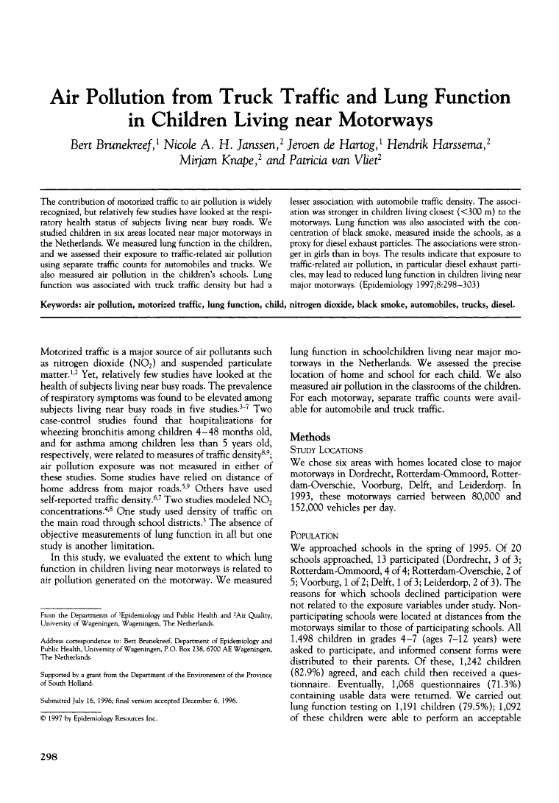

If you need an accessible version of this item please contact JSTOR User Support
Air Pollution from Truck Traffic and Lung Function in Children Living near Motorways
Bert Brunekreef, Nicole A. H. Janssen, Jeroen de Hartog, Hendrik Harssema, Mirjam Knape and Patricia van Vliet
Epidemiology
Vol. 8, No. 3 (May, 1997), pp. 298-303
Published by: Lippincott Williams & Wilkins
Stable URL: http://www.jstor.org/stable/3702257
Page Count: 6
You are not currently logged in.
Access your personal account or get JSTOR access through your library or other institution:
Viewing page 298 of pages 298-303

Abstract
The contribution of motorized traffic to air pollution is widely recognized, but relatively few studies have looked at the respiratory health status of subjects living near busy roads. We studied children in six areas located near major motorways in the Netherlands. We measured lung function in the children, and we assessed their exposure to traffic-related air pollution using separate traffic counts for automobiles and trucks. We also measured air pollution in the children's schools. Lung function was associated with truck traffic density but had a lesser association with automobile traffic density. The association was stronger in children living closest (<300 m) to the motorways. Lung function was also associated with the concentration of black smoke, measured inside the schools, as a proxy for diesel exhaust particles. The associations were stronger in girls than in boys. The results indicate that exposure to traffic-related air pollution, in particular diesel exhaust particles, may lead to reduced lung function in children living near major motorways.
Epidemiology © 1997 Lippincott Williams & Wilkins